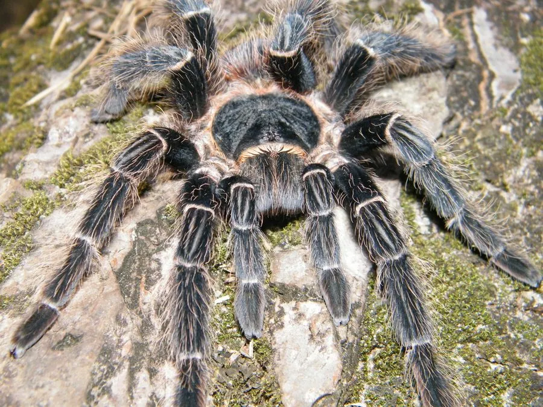

蛛形动物 · 动物界
巴西所罗门食鸟蛛 Lasiodora parahybana

巴西东北部的大型捕鸟蛛，足展可达 25 厘米，体色灰褐，性情相对温顺，是体型最大的捕鸟蛛之一，也是常见异宠。
- 分类
- 门节肢动物门纲蛛形纲目蜘蛛目科捕鸟蛛科属食鸟蛛属
- 栖息环境
- 热带雨林和灌丛的地面、洞穴、石块下与倒木旁
- 地理分布
- 巴西东北部的热带地区
- 保护级别
- IUCN 暂无评估；非中国原产，在中国无保护级别
物种志
巴西所罗门食鸟蛛成年足展 20–25 cm，是体型最大的捕鸟蛛之一，体色灰褐至深褐，身体和足上覆盖细密的长毛，腹部有浅色斑纹；雌蛛比雄蛛更粗壮，寿命也更长。
它原产于巴西东北部的热带雨林和灌丛，栖息于地面洞穴、石块下和倒木旁，夜间捕食昆虫、小型蜥蜴、蛙类甚至小鼠。巴西所罗门食鸟蛛性情相对温顺，受惊时先弹射蛰毛，被逼急时才可能咬人，蛰毛接触皮肤会引起瘙痒。它会在洞口织网并伏击经过的猎物。雌蛛寿命可达 20 年，繁殖期产卵上百枚。它因体型巨大而成为异宠市场的热门种类，野外种群受到捕捉和栖息地破坏的影响；目前 IUCN 暂无评估，非中国原产，在中国无保护级别。
形态与习性
- 食性昆虫、小型蜥蜴、蛙类甚至小鼠
- 足展20–25 cm
- 识别体色灰褐，身体和足上覆盖细长毛
- 寿命雌蛛可达 20 年
- 习性地栖，洞口织网伏击猎物
- 防御弹射蛰毛，被逼急时可能咬人
趣味知识
- 巴西所罗门食鸟蛛足展可达 25 厘米，是体型最大的捕鸟蛛之一。
- 它会在洞口铺一层丝网，靠震动判断猎物是否靠近。
- 尽管名字里有“食鸟”，它平时的食物主要是昆虫和小型动物。